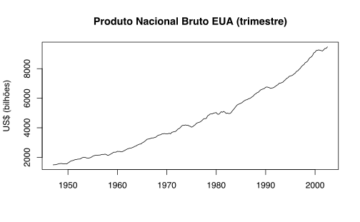

library(astsa)
library(forecast)
data("gnp")Introdução
Neste post apresento como estimar e diagnosticar um modelo ARMA simples no R. O modelo ARMA decompõe uma série em função de suas observações passadas e de “passados” (às vezes chamados de inovações). O ARMA(1, 1) com constante tem a seguinte forma.
\[ y_{t} = \phi_{0} +\phi_{1}y_{t-1} + \varepsilon_{t} + \theta_{1}\varepsilon_{t - 1} \]
onde ambas as condições de estacionaridade como de invertibilidade devem ser atendidas. Assume-se que o termo \(\varepsilon_{t}\) é um ruído branco. De maneira mais geral, um modelo ARMA(p, q) tem a forma:
\[ y_{t} = \phi_{0} +\phi_{1}y_{t-1} + \dots + \phi_{p}y_{t-p} + \varepsilon_{t} + \theta_{1}\varepsilon_{t - 1} + \dots + \theta_{q}\varepsilon_{t- q} \]
Crescimento do PNB
Vamos usar a série do PNB disponbilizada pelo pacote astsa. Este pacote foi montado pelos autores do livro Time Series Analysis. Para visualizar a série usamos a função plot.ts.
plot.ts(gnp,
main = "Produto Nacional Bruto EUA (trimestre)",
xlab = "",
ylab = "US$ (bilhões)")
Precisamos transformar a série primeiro. Para encontrar a variação percentual de uma variável \(y_{t}\) qualquer fazemos
\[ \Delta y_{t} = \frac{y_{t} - y_{t-1}}{y_{t-1}} \]
Uma aproximação comumumente usada no lugar da equação acima é a diferença em log. Na literatura de finanças a equação acima também é conhecida como retorno e a diferença em log como log-retorno. Na prática, além da aproximação ser boa para valores pequenos (em torno de zero) costuma ser mais cômodo trabalhar com log-retornos.
\[ \Delta y_{t} = \frac{y_{t} - y_{t-1}}{y_{t-1}} \approx \text{ln}(1 + \Delta y_{t}) = \text{ln}(y_{t}/y_{t-1}) = \text{ln}(y_{t}) - \text{ln}(y_{t-1}) \]
No R podemos combinar duas funções para facilitar o cômputo da diferença dos logs: usamos diff() que computa \(y_{t} - y_{t - 1}\) junto com a função log() que computa o logaritmo. Note que a função log() usa o número \(e\) como base; é possível trocar a base usando o argumento base = 10, por exemplo, ou usar simplesmente uma outra função log10().
# Computa log(y[t]) - log(y[t-1])
y <- diff(log(gnp))
# Gráfico da série transformada
plot.ts(y * 100, main = "Variação percentual do PIB", xlab = "", ylab = "(%)")
abline(h = 0, col = "gray30")Para avaliar a qualidade do modelo vamos reservar a parte final dos dados: a ideia é gerar previsões usando apenas a informação da primeira parte da amostra e então comparar estas previsões com as observações. Esta metodologia às vezes é denominada de train (treino) e test (teste).
Treinamos o modelo com as primeiras observações e depois testamos as suas previsões contra as observações finais (que ficaram fora do modelo). Aqui também cabe uma breve observação sobre dados em série de tempo. Se tivéssemos dados em cross-section o correto seria formar as bases train e test usando algum tipo de amostragem aleatória. Como os dados de série de tempo são encadeados não podemos fazer isto: por isto “cortamos” as observações num determinado instante do tempo.
Abaixo escolho um tanto arbitrariamente cortar os dados em janeiro de 1992. Em azul destaco os dados que serão utilizados para alimentar o modelo. As previsões serão testasdas contra as observações em vermelho.
# Cria a janela temporal
train <- window(y, end = c(1991, 4))
teste <- window(y, start = c(1992, 1))
# Plota o gráfico destacando as observações finais que foram removidas.
plot.ts(y)
lines(train, col = "blue")
lines(teste, col = "red")Identificação
O primeiro trabalho que temos é o de identificar a ordem do modelo, isto é, encontrar os valores verdadeiros de \(p\) e \(q\). A maneira mais comum de começar é tentar comparar os gráficos das funções de autocorrelação (FAC) e autocorrelação parcial (FACP) com suas contrapartidas teóricas. O R tem as funções acf() e pacf() que calculam estes valores junto com intervalos de confiança assintóticos.
# Modifica parâmetros para apresentar dois gráficos numa mesma figura
par(mfrow = c(2, 1))
acf(train, main = "Função de autocorrelação", xlab = "Defasagem", ylab = "ACF")
pacf(train, main = "Função de autocorrelação parcial", xlab = "Defasagem", ylab = "PACF")Note que a escala das defasagens é agrupada pela frequência dos dados, isto é, são contadas de quatro em quatro. Há alguns problemas com a visualização acima. Primeiro, a função de autocorrelãção começa no lag zero, isto é, \(\rho(0)\). Sabemos que este valor sempre será igual a um pois, por definição: \(\rho(0) = \frac{\gamma(0)}{\gamma(0)} = 1\). Logo, seria melhor que esta defasagem fosse suprimida. Além disso, é um tanto inconveniente ter que modificar os parâmetros gráficos usando par(mfrow = c(2, 1)). Uma saída é usar a função acf2() do pacote astsa. Esta função também imprime uma lista com os valores estimados da FAC e da FACP.
acf2(train)#> [,1] [,2] [,3] [,4] [,5] [,6] [,7] [,8] [,9] [,10] [,11] [,12] [,13]
#> ACF 0.36 0.19 -0.01 -0.13 -0.17 -0.11 -0.09 -0.05 0.04 0.05 0.03 -0.12 -0.13
#> PACF 0.36 0.07 -0.12 -0.12 -0.08 0.00 -0.03 -0.02 0.05 0.01 -0.03 -0.18 -0.05
#> [,14] [,15] [,16] [,17] [,18] [,19] [,20] [,21] [,22] [,23] [,24]
#> ACF -0.10 -0.11 0.05 0.08 0.11 0.06 0.07 -0.08 -0.05 -0.10 -0.06
#> PACF 0.02 -0.07 0.10 0.02 0.02 -0.04 0.02 -0.11 0.03 -0.03 -0.01Agora está mais claro que as duas primeiras defasagens da FAC são significantes e que a primeira defasagem da FACP é significante. Note também que a 5ª defasagem na FAC é um pouco significante e há uma defasagem de ordem elevada (lag 12) que é um pouco significante na FACP. Em geral, podemos desprezar estas autocorrelações de ordens muito elevadas até porque vamos querer modelos mais parcimoniosos (i.e. com poucos parâmetros).
Apenas olhando para os gráficos acima poderíamos chutar um modelo ARMA(1,1), ARMA(1,2) ou mesmo um AR(1). Depois disto teríamos que checar os resíduos para ver se o modelo está bem ajustado. Por fim, poderíamos escolher o melhor modelo segundo algum critério de informação como o Critério de Akaike (AIC). Alternativamente, poderíamos identificar a ordem do modelo usando algum algoritmo. A função auto.arima() do pacote forecast() verifica vários modelos e compara eles via uma série de critérios.
Estimação e diagnóstico
Modelo 1
Vou primeiro estimar o ARMA(1, 2) usando a função arima() do R.
(m1 <- arima(train, order = c(1, 0, 2)))
#>
#> Call:
#> arima(x = train, order = c(1, 0, 2))
#>
#> Coefficients:
#> ar1 ma1 ma2 intercept
#> 0.2324 0.0971 0.1623 0.0084
#> s.e. 0.2294 0.2247 0.0958 0.0012
#>
#> sigma^2 estimated as 0.0001038: log likelihood = 566.91, aic = -1123.82A estimativa tem a forma: \[ y_{t} = \underset{(0.0012)}{0.0084} + \underset{(0.2324)}{0.2294}y_{t - 1} + \underset{(0.2247)}{0.0971}\epsilon_{t-1} + \underset{(0.0958)}{0.1623}\epsilon_{t-2} \] Note que os erros-padrão de \(\hat{\phi_{1}}\) e \(\hat{\theta_{1}}\) são bastante elevados. De fato, um teste-t revela que estes coeficientes não são significantes.
Diagnóstico de resíduos
Pode-se verificar os resíduos do modelo de muitas formas. Idealmente, quer-se que os resíduos não apresentem autocorrelação alguma. Uma forma gráfica de ver isto é usando a função lag1.plot que apresenta gráficos de dispersão entre o resíduo \(u_{t}\) contra suas defasagens \(u_{t-1}, u_{t-2}, \dots\). Abaixo faço isto para as primieras quatro defasagens.
residuos <- resid(m1)
lag1.plot(residuos, max.lag = 4)Na prática, é mais conveniente analisar diretamente os gráficos da FAC e da FACP dos resíduos.
acf2(residuos)#> [,1] [,2] [,3] [,4] [,5] [,6] [,7] [,8] [,9] [,10] [,11] [,12] [,13]
#> ACF 0.01 -0.01 0 -0.09 -0.12 -0.03 -0.04 -0.05 0.04 0.06 0.07 -0.12 -0.07
#> PACF 0.01 -0.01 0 -0.09 -0.12 -0.03 -0.05 -0.06 0.02 0.04 0.06 -0.15 -0.09
#> [,14] [,15] [,16] [,17] [,18] [,19] [,20] [,21] [,22] [,23] [,24]
#> ACF -0.03 -0.12 0.07 0.06 0.06 0.02 0.09 -0.1 0.00 -0.07 -0.04
#> PACF -0.02 -0.11 0.06 0.02 0.04 -0.02 0.05 -0.1 0.01 -0.05 -0.01Um teste basatante usual para verificar a presença de autocorrelação nos resíduos é o Ljung-Box. Para computá-lo uso a função Box.test() do pacote tseries. Note que é preciso suplementar o argumento fitdf com o número de parâmetros estimados do modelo. Isto serve para corrigir a estatística do teste. A escolha da ordem do teste é um tanto arbitrária e, na prática, seria recomendado fazer o teste para várias ordens diferentes. O código abaixo computa a estatística do teste para uma defasagem igual a 8.
Note o uso do argumento fitdf que leva em conta o número de parâmetros estimados no modelo. Segundo o p-valor, não temos evidência para rejeitar a hipótese nula de que os resíduos não são conjuntamente autocorrelacionados. Isto é, temos evidência de que o modelo está bem ajustado pois os resíduos parecem se comportar como ruído branco.
library(tseries)
Box.test(residuos, type = "Ljung-Box", lag = 8, fitdf = 4)
#>
#> Box-Ljung test
#>
#> data: residuos
#> X-squared = 4.9486, df = 4, p-value = 0.2926Na prática, é bom repetir o teste para várias defasagens diferentes. A tabela abaixo resume os valores do teste para várias ordens de defasagem. Vale lembrar que o teste Ljung-Box tende a não-rejeitar H0 para defasagens muito elevadas.
| Defasagem | Estatística de teste | P-valor |
|---|---|---|
| 8 | 4.9486 | 0.2926 |
| 9 | 5.2251 | 0.3890 |
| 10 | 5.8669 | 0.4383 |
| 11 | 6.7991 | 0.4501 |
| 12 | 9.7788 | 0.2809 |
| 13 | 10.8054 | 0.2893 |
| 14 | 10.9313 | 0.3629 |
| 15 | 13.6377 | 0.2537 |
| 16 | 14.5903 | 0.2646 |
| 17 | 15.2158 | 0.2941 |
| 18 | 15.8735 | 0.3212 |
| 19 | 15.9294 | 0.3868 |
| 20 | 17.4548 | 0.3568 |
Usando o pacote astsa
Uma forma bastante conveniente de trabalhar com modelos ARMA é com a função sarima do pacote astsa. Esta função apresenta automaticamente algumas valiosas informações para o diagnóstico dos resíduos: o gráfico do ACF, o gráfico qq-plot (para verificar a normalidade dos resíduos) e os p-valores do teste Ljung-Box para várias ordens de defasagem.
A saída abaixo reúne quatro gráficos. O primeiro deles apresenta o resíduo normalizado (ou escalado). Este gráfico não deve apresentar um padrão claro. O segundo gráfico é a FAC do resíduo: idealmente, nenhuma defasagem deve ser significativa neste gráfico. Ao lado da FAC temos o QQ-plot: se todos os pontos caem sobre a linha azul temos evidência de que os resíduos são normalmente distribuídos.
Por fim, o último gráfico mostra o p-valor do teste Ljung-Box (já ajustado pelo número de parâmetros do modelo estimado) para diferentes defasagens. A linha tracejada em azul indica o valor 0.05. Idealmente, todos os pontos devem estar acima desta linha.
sarima(train, p = 1, d = 0, q = 2)
#> initial value -4.507231
#> iter 2 value -4.512000
#> iter 3 value -4.582718
#> iter 4 value -4.583615
#> iter 5 value -4.583727
#> iter 6 value -4.583754
#> iter 7 value -4.583896
#> iter 8 value -4.583941
#> iter 9 value -4.583957
#> iter 10 value -4.583958
#> iter 10 value -4.583958
#> final value -4.583958
#> converged
#> initial value -4.586016
#> iter 2 value -4.586020
#> iter 3 value -4.586022
#> iter 4 value -4.586023
#> iter 5 value -4.586025
#> iter 6 value -4.586026
#> iter 7 value -4.586027
#> iter 8 value -4.586027
#> iter 9 value -4.586028
#> iter 9 value -4.586028
#> iter 9 value -4.586028
#> final value -4.586028
#> converged#> $fit
#>
#> Call:
#> arima(x = xdata, order = c(p, d, q), seasonal = list(order = c(P, D, Q), period = S),
#> xreg = xmean, include.mean = FALSE, transform.pars = trans, fixed = fixed,
#> optim.control = list(trace = trc, REPORT = 1, reltol = tol))
#>
#> Coefficients:
#> ar1 ma1 ma2 xmean
#> 0.2324 0.0971 0.1623 0.0084
#> s.e. 0.2294 0.2247 0.0958 0.0012
#>
#> sigma^2 estimated as 0.0001038: log likelihood = 566.91, aic = -1123.82
#>
#> $degrees_of_freedom
#> [1] 175
#>
#> $ttable
#> Estimate SE t.value p.value
#> ar1 0.2324 0.2294 1.0130 0.3125
#> ma1 0.0971 0.2247 0.4319 0.6664
#> ma2 0.1623 0.0958 1.6946 0.0919
#> xmean 0.0084 0.0012 6.7491 0.0000
#>
#> $AIC
#> [1] -6.278312
#>
#> $AICc
#> [1] -6.277028
#>
#> $BIC
#> [1] -6.189279Modelo 2
Estimo também o modelo ARMA(1, 1). A análise de resíduos é análoga à apresentada acima.
m2 <- arima(train, order = c(1, 0, 1))Modelo 3
Para o terceiro modelo uso o método automático do auto.arima(). A função escolhe o AR(1) com constante como melhor modelo para representar os dados. Note que a na inspeação visual também tínhamos verificado que o AR(1) seria um possível candidato.
(m3 <- auto.arima(train))
#> Series: train
#> ARIMA(1,0,0) with non-zero mean
#>
#> Coefficients:
#> ar1 mean
#> 0.3568 0.0084
#> s.e. 0.0695 0.0012
#>
#> sigma^2 = 0.0001066: log likelihood = 565.52
#> AIC=-1125.04 AICc=-1124.91 BIC=-1115.48Seleção
Para escolher o melhor modelo pode-se usar algum critério de informação. Abaixo comparo os modelos segundo os critérios AIC, AICc (AIC corrigido) e BIC (Bayesian Information Criterion). Na prática, não é comum que os três critérios escolham o mesmo modelo; em particular, o BIC penaliza o número de parâmetros mais fortemente que o AIC. Neste caso específico, os três critérios escolhem o AR(1).
| AIC | AICc | BIC | |
|---|---|---|---|
| ARMA(1, 2) | -1123.818 | -1124.908 | -1115.483 |
| ARMA(1, 1) | -1123.563 | -1124.908 | -1115.483 |
| AR(1) | -1125.045 | -1124.908 | -1115.483 |
Previsão
Para gerar previsões usamos a função forecast() (outra opção é usar a função base predict()). Abaixo computo previsões para os três modelos acima mais um modelo ingênuo que será usado como bench-mark. O modelo ingênuo é simplesmente um random-walk que prevê sempre o valor anterior, isto é, \(\hat{y_{T+1}} = y_{T}\).
prev1 <- forecast(m1, h = length(teste))
prev2 <- forecast(m2, h = length(teste))
prev3 <- forecast(m3, h = length(teste))
prev4 <- forecast(naive(train, h = length(teste)), h = length(teste))
erros <- t(matrix(c(teste - prev1$mean,
teste - prev2$mean,
teste - prev3$mean,
teste - prev4$mean),
ncol = 4))
erros <- as.data.frame(erros)
colnames(erros) <- paste("t =", as.numeric(time(teste)))
row.names(erros) <- c("ARMA(1, 2)",
"ARMA(1, 1)",
"AR(1)",
"Y[t+1] = Y[t]")Os erros de previsão são apresentados na tabela abaixo.
| t = 1992 | t = 1992.25 | t = 1992.5 | t = 1992.75 | t = 1993 | t = 1993.25 | t = 1993.5 | t = 1993.75 | t = 1994 | t = 1994.25 | t = 1994.5 | t = 1994.75 | t = 1995 | t = 1995.25 | t = 1995.5 | t = 1995.75 | t = 1996 | t = 1996.25 | t = 1996.5 | t = 1996.75 | t = 1997 | t = 1997.25 | t = 1997.5 | t = 1997.75 | t = 1998 | t = 1998.25 | t = 1998.5 | t = 1998.75 | t = 1999 | t = 1999.25 | t = 1999.5 | t = 1999.75 | t = 2000 | t = 2000.25 | t = 2000.5 | t = 2000.75 | t = 2001 | t = 2001.25 | t = 2001.5 | t = 2001.75 | t = 2002 | t = 2002.25 | t = 2002.5 | |
|---|---|---|---|---|---|---|---|---|---|---|---|---|---|---|---|---|---|---|---|---|---|---|---|---|---|---|---|---|---|---|---|---|---|---|---|---|---|---|---|---|---|---|---|
| ARMA(1, 2) | 0.0017385 | 0.0009996 | -0.0011832 | 0.0047685 | -0.0075880 | -0.0034300 | -0.0032720 | 0.0041505 | 0.0009645 | 0.0048053 | -0.0031499 | 0.0038158 | -0.0038534 | -0.0059706 | -0.0026298 | 0.0011636 | -0.0008728 | 0.0066953 | -0.0041940 | 0.0035309 | 0.0012488 | 0.0064862 | 0.0012950 | -0.0021395 | 0.0069883 | -0.0032794 | -0.0002956 | 0.0083934 | 0.0023188 | -0.0031434 | 0.0033963 | 0.0099058 | -0.0030742 | 0.0039295 | -0.0078546 | -0.0045499 | -0.0119065 | -0.0103021 | -0.0110772 | 0.0006393 | 0.0005900 | -0.0074360 | 0.0023173 |
| ARMA(1, 1) | 0.0015678 | 0.0011472 | -0.0010609 | 0.0048359 | -0.0075556 | -0.0034158 | -0.0032667 | 0.0041516 | 0.0009637 | 0.0048036 | -0.0031520 | 0.0038136 | -0.0038557 | -0.0059730 | -0.0026323 | 0.0011611 | -0.0008752 | 0.0066928 | -0.0041964 | 0.0035284 | 0.0012464 | 0.0064838 | 0.0012925 | -0.0021420 | 0.0069858 | -0.0032818 | -0.0002980 | 0.0083910 | 0.0023164 | -0.0031458 | 0.0033939 | 0.0099034 | -0.0030766 | 0.0039271 | -0.0078570 | -0.0045523 | -0.0119090 | -0.0103046 | -0.0110796 | 0.0006369 | 0.0005876 | -0.0074384 | 0.0023149 |
| AR(1) | 0.0013079 | 0.0009620 | -0.0011721 | 0.0047728 | -0.0075918 | -0.0034379 | -0.0032817 | 0.0041400 | 0.0009537 | 0.0047944 | -0.0031608 | 0.0038049 | -0.0038643 | -0.0059815 | -0.0026408 | 0.0011526 | -0.0008837 | 0.0066843 | -0.0042049 | 0.0035199 | 0.0012379 | 0.0064753 | 0.0012840 | -0.0021505 | 0.0069773 | -0.0032903 | -0.0003065 | 0.0083825 | 0.0023079 | -0.0031543 | 0.0033854 | 0.0098949 | -0.0030851 | 0.0039186 | -0.0078655 | -0.0045608 | -0.0119175 | -0.0103131 | -0.0110881 | 0.0006284 | 0.0005791 | -0.0074469 | 0.0023064 |
| Y[t+1] = Y[t] | 0.0024552 | 0.0025186 | 0.0005306 | 0.0065276 | -0.0058184 | -0.0016579 | -0.0014994 | 0.0059232 | 0.0027372 | 0.0065781 | -0.0013772 | 0.0055886 | -0.0020806 | -0.0041978 | -0.0008571 | 0.0029363 | 0.0009000 | 0.0084680 | -0.0024213 | 0.0053036 | 0.0030215 | 0.0082589 | 0.0030677 | -0.0003668 | 0.0087610 | -0.0015066 | 0.0014772 | 0.0101662 | 0.0040916 | -0.0013707 | 0.0051690 | 0.0116786 | -0.0013015 | 0.0057023 | -0.0060818 | -0.0027771 | -0.0101338 | -0.0085294 | -0.0093044 | 0.0024120 | 0.0023628 | -0.0056632 | 0.0040900 |
Pode-se melhor comparar a performance das previsões usando alguma medida agregada de erro. Duas medidas bastante comuns são o Erro Absoluto Médio (EAM) e o Erro Quadrático Médio. A primeira toma o módulo da diferença entre o previsto (\(\hat{y}\)) e o observado (\(y\)) e tira uma média, enquanto a última toma a diferença quadrática. Formalmente, para um horizonte de previsão \(h\) começando na última observação \(T\):
\[\begin{align} \text{EAM} & = \frac{1}{h}\sum_{i = T + 1}^{T + h} |y_{i} - \hat{y}_{i}| \\ \text{EQM} & = \frac{1}{h}\sum_{i = T + 1}^{T + h} (y_{i} - \hat{y}_{i})^2 \end{align}\]A tabela abaixo compara os modelos segundo estas medidas de erro.
| EAM | EQM | |
|---|---|---|
| ARMA(1, 2) | 0.0042173 | 0.0042062 |
| ARMA(1, 1) | 0.0000268 | 0.0000268 |
| AR(1) | 0.0042143 | 0.0043644 |
| Y[t+1] = Y[t] | 0.0000268 | 0.0000280 |
Nem sempre é fácil comparar estas medidas, i.e., verificar se elas são estatisticamente significantes. Pode-se usar o teste Diebold-Mariano para comparar estas medidas de erro, mas é importante frisar que ele contém uma série de hipóteses sobre a distribuição dos erros. A função dm.test do pacote forecast faz este teste e mais informações sobre ele podem ser encontradas usando ?dm.test.
Pode-se visualizar as previsões usando as funções autoplot() e autolayer() do pacote forecast. Abaixo mostro os resultados para o modelo AR(1) e também para o modelo ingênuo. note como o erros-padrão deste último cresce muito rapidamente (pois a variância de um processo random-walk cresce sem limite).
library(ggplot2)
autoplot(prev2, include = 50) +
autolayer(teste) +
theme_bw()
autoplot(prev3, include = 50) +
autolayer(teste) +
labs(x = "", y = "(%)") +
theme_bw()
autoplot(prev4, include = 50) +
autolayer(teste) +
labs(x = "", y = "(%)") +
theme_bw()Conclusão
Os modelos da classe ARMA são bastante populares em séries de tempo pois geram boas previsões de curto prazo. Além disso, estes modelos são estimados facilmente e usam apenas a informação da própria série. No post acima, vimos como estimar um modelo ARMA e algumas das facilidades que tanto o pacote astsa como o forecast nos oferecem.